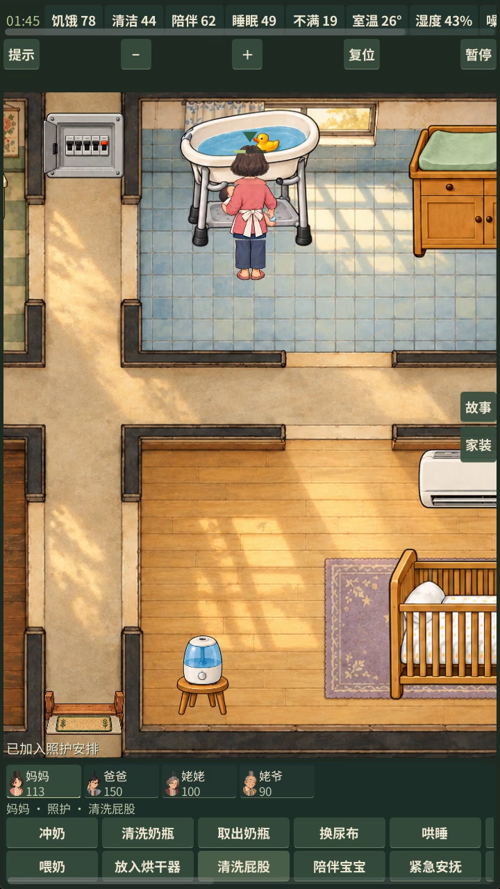

把照护拆成有依赖的任务
冲奶、喂养、清洗与烘干构成前后衔接，多角色分工与体力让时间安排成为核心问题。
TAPTAP MAKER / 个人 AI 游戏实践
家庭照护 / 角色调度 / 生活模拟
为爸妈和祖辈安排照护分工，在冲奶、喂养、清洗、洗护与哄睡之间调整节奏，也要让家人及时休息。

TapTap 公开测试 · 2026.10.25 核对
GAMEPLAY / 核心体验
先通过双人教学熟悉照护流程，再调度多位家庭成员处理宝宝需求、体力与日常干扰。公开介绍包含1日、3日、15日和无尽挑战、辅食练习、成长能力及三份独立存档；家装先预览再确认，摆放期间照护暂停。
TAPTAP GALLERY / 游戏展示图
以下来自 2026.10.25 核对的 TapTap 公开游戏页展示图；保留原图，部分含商店宣传文案，不冒充本次重新运行游戏的实机录制。
点击任意截图可查看原图。 多张画面可左右滑动，也可聚焦图库后使用方向键浏览。


DESIGN / 规则与取舍
冲奶、喂养、清洗与烘干构成前后衔接，多角色分工与体力让时间安排成为核心问题。
饭点、工作来电与家庭分歧穿插日常照护，在同一空间中组织优先级。
双人教学建立基本认知，再以不同挑战长度、成长能力和存档承接后续目标。
跟随查看、镜头拖动及暂停家装各有操作场景，预览确认避免把编辑动作与正常照护混用。
MY PRACTICE / 项目推进
作为个人AI游戏实践收录，重点展示多角色任务依赖、体力与日程安排，以及房间交互和家装预览。依据公开作品说明整理，不额外推断程序、美术的独立完成范围。
TAPTAP / 游戏入口
试玩入口与当前可玩版本以 TapTap 游戏页为准；公开介绍中的功能和数量属于开发者在平台展示的信息。